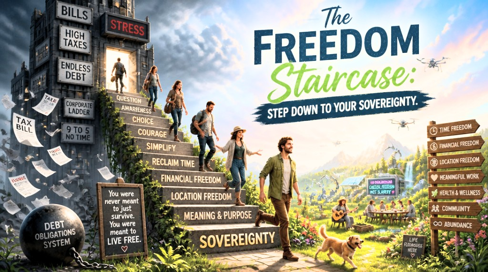

The World Manifesto

Frihetstrappan


Världsmanifestet i 4 steg
- Först: Idén (Världsmanifestet) måste bli känd.
- För det andra: Idén måste in i riksdagen och få majoritet, där lagarna ändras och bland annat Frihetstrappans skuldavskrivning blir lag och maskinkonstitutionen blir verklighet.
- För det tredje: Staten blir helt automatiserad med en produktion som fungerar som befolkningens eget fria skafferi.
- För det fjärde: Robotarna blir autonoma när de är självreplikerande, och då får jorden den del av naturens ekosystem som saknats fram till nu.